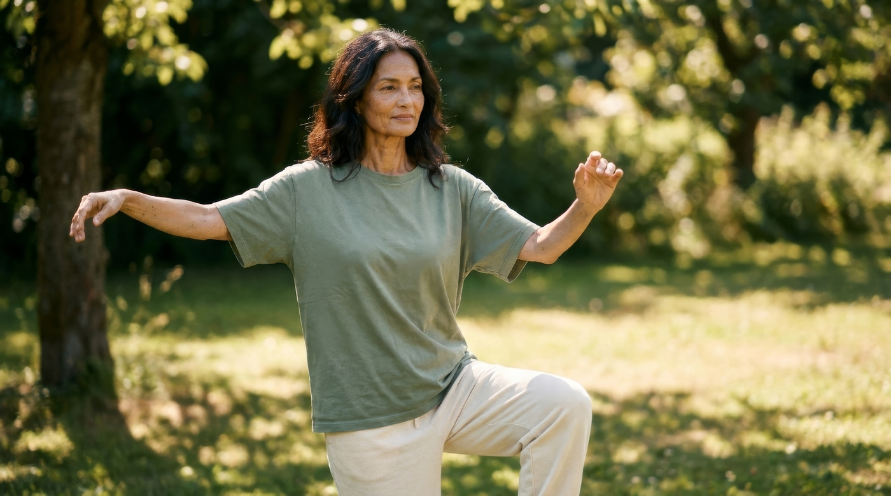
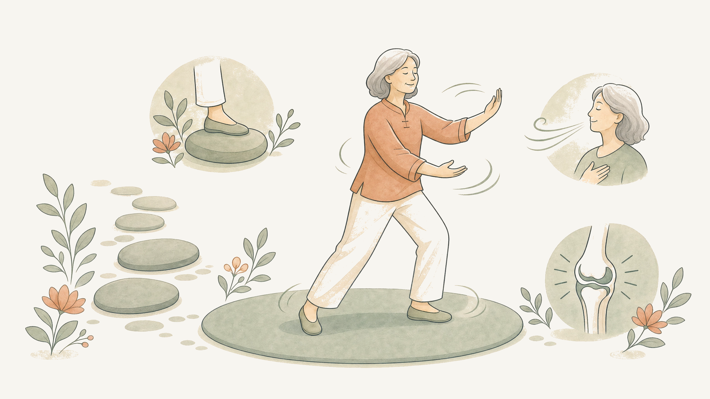
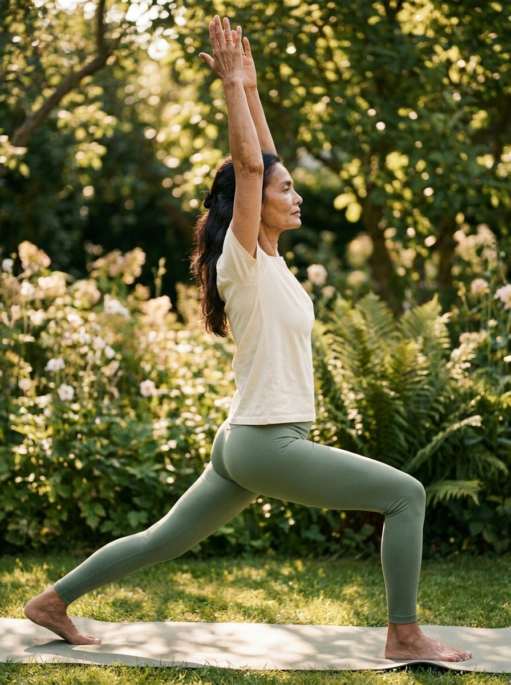
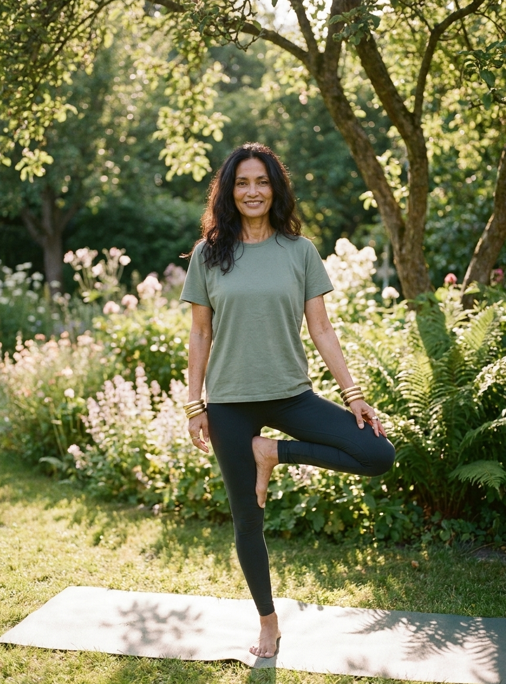
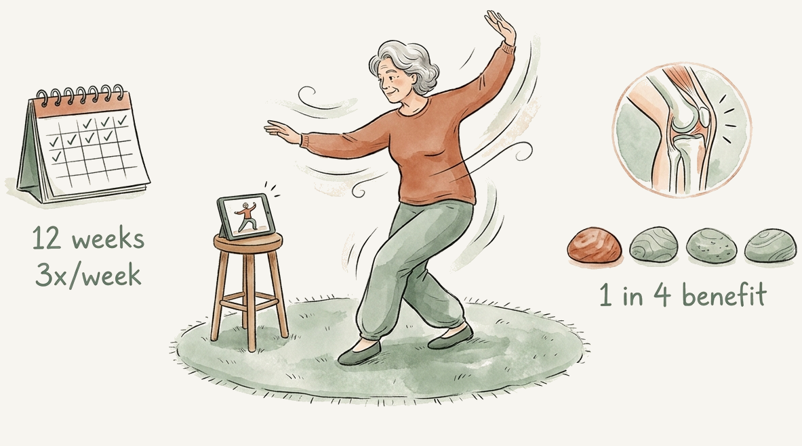
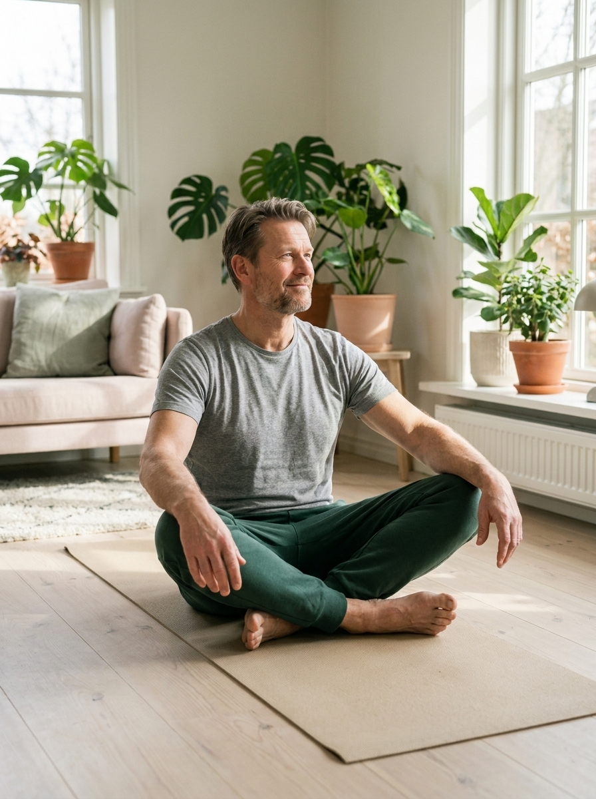

Slow, flowing, low impact movement that builds strength and balance while easing knee pain. One of the few therapies a major guideline strongly recommends, and you can do it at home.

Slow, flowing movement in the open air. Gentle on the knee, calming for the mind.
Tai chi is a gentle practice of slow, flowing movements, weight shifts, and steady breathing. It looks calm, almost like moving meditation, but it quietly trains the things a sore knee needs most: the muscles that support the joint, your balance, and a calmer relationship with pain. It is low impact, easy on the knee, and one of the very few treatments that a major arthritis guideline strongly recommends for knee osteoarthritis(1).

Slow weight shifts, steady breathing, balance, and a calmer knee, all in one practice.

Tai chi works on several fronts at once. The slow stances gently strengthen the thigh and hip muscles that share load with the knee. The constant weight shifting trains balance and confidence, and balance focused movement like tai chi is associated with a lower falls risk in older adults with knee OA(2). And the breathing and focus calm the nervous system, which helps with the way pain is felt, along with mood and sleep.

The American College of Rheumatology strongly recommends tai chi for knee osteoarthritis, one of its highest level movement recommendations(1). The research behind that is direct: in a head to head randomized trial, 12 weeks of tai chi was as effective as physical therapy for knee pain and function, with a greater improvement in mood(3). A meta-analysis of randomized trials found the same pattern for pain, stiffness, and function(4). In other words, it is not a soft alternative, it holds its own against conventional exercise.

In the 2026 RETREAT trial, 178 people with knee osteoarthritis followed a 12 week unsupervised online tai chi program at home, about three times a week. Compared with health education alone, it meaningfully improved knee pain on walking and day to day function, along with quality of life and balance confidence. The number needed to treat was about 4 for a meaningful improvement in pain, so roughly one in four people gained a clear benefit, from a free program with no class to attend(5).

You do not need special equipment or a studio. A beginner online tai chi program or a gentle local class is plenty. Aim for short, regular sessions:
A note on instruction: clara does not teach the tai chi movements themselves yet, so pick any gentle beginner program and use this tracker alongside it. A class at your local community centre works well, and if there is none near you, an online course you can follow at home is just as good, for example An Introduction to Tai Chi from Harvard Medical School, a self paced video course you can do in the comfort of home.
A gentle, steady build. Each stage covers three weeks. Tick a stage when you finish it, and your progress is saved on this device.
| Weeks | Your practice | Done |
|---|---|---|
| 1 to 3 | Learn the basics. 2 to 3 short sessions a week, holding a chair for balance. Focus on slow weight shifts and breathing. | |
| 4 to 6 | Build the habit. 3 sessions a week, 20 minutes. Let go of the chair when you feel steady. | |
| 7 to 9 | Flow. 3 sessions a week, 25 to 30 minutes. Link the movements together more smoothly. | |
| 10 to 12 | Make it yours. 3 sessions a week. Notice the change in pain, balance, and ease of walking, and keep going. |
Tai chi counts as both gentle strengthening and balance work, so it fits naturally alongside the rest of your plan. Use it on its own, or weave it in with your Walk With Ease walks and your Knee Strengthening Routine. Variety keeps it interesting, and all of it points the same way: a stronger, calmer, steadier knee.
Tai chi is very gentle and injuries are rare, but listen to your knee. Mild tiredness in the legs is fine. Sharp joint pain is a sign to ease the depth of your stances or shorten the session. Keep support nearby until your balance is solid.
Tai chi asks for very little and gives back a lot: less pain, better balance, a calmer mind. A few slow, steady sessions a week is all it takes to begin.
This guide is for education and is not a substitute for your Clara doctor’s advice. Your plan is personalized to you.